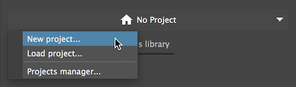
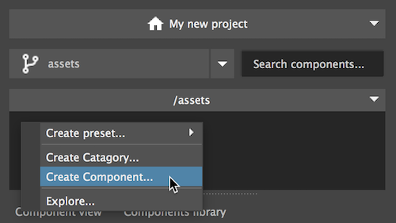
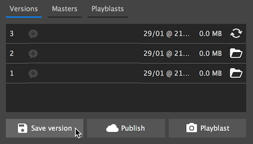

Getting started
Let's create our first project and save our first versioned item
Create a new project

From the projects switcher, select "new project…" and fill in the required fields.
Create a new component

Create a component by clicking the dropdown menu in the folder browser and select "new component".
Give it a name and hit Enter.
Save a version

To start saving versions navigate to any component and use save version. The current scene will be saved as the first version of your component.
Tip
- Click the chat balloon icons to save a version specific massage
- Any content that is currently opened in maya will be saved when saving version.